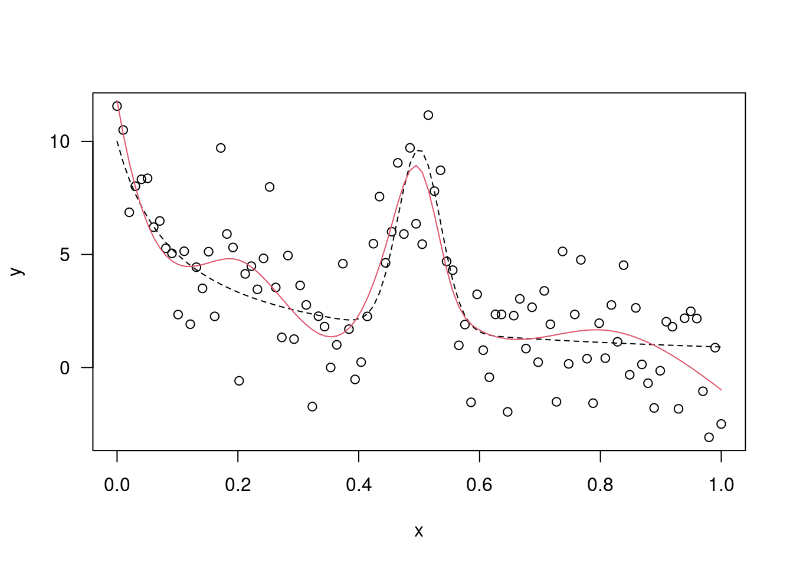
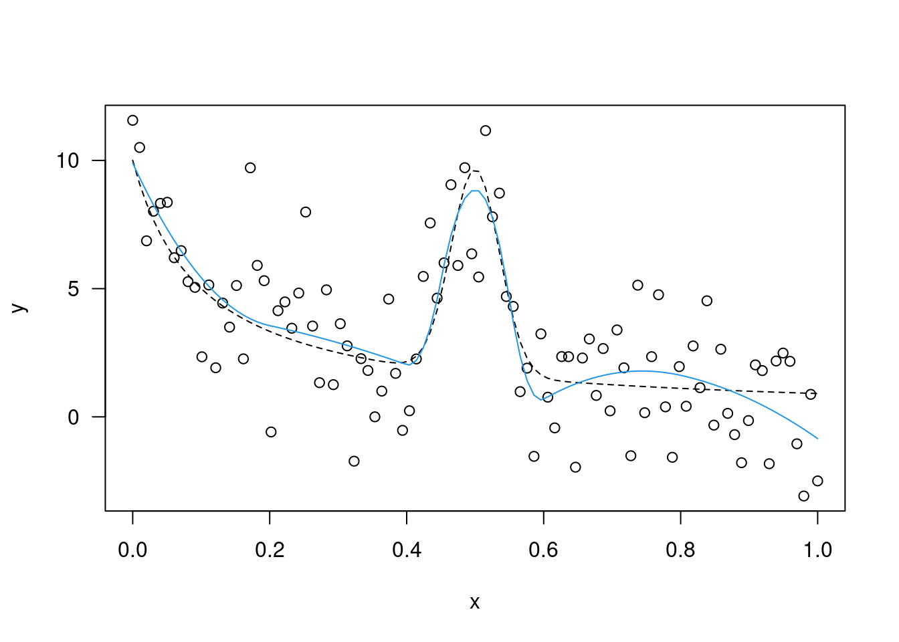
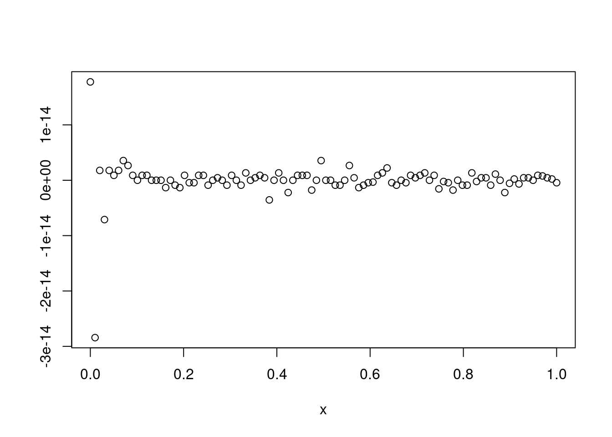

21 B Splines
- Any given basis function is nonzero over a span of at most five distinct knots
- This means that their evaluation rarely gets out of hand, and the resulting regression matrix is banded
21.1 Example
library(splines2) # ?bSpline
n=100; xi=seq(0,1,length=n)
mx=1/(0.1+xi)+8*exp(-400*(xi-0.5)^2); y=mx+rnorm(n,0,2)
plot(xi,y,las=1,xlab="x"); lines(xi,mx,lty=2)
kts=c(0.2,0.4,0.45,0.5,0.55,0.6,0.8)
bsm1=bSpline(xi,knots=kts,degree=3,intercept=T);
head(bsm1,10)## 1 2 3 4 5 6 7 8 9 10 11
## [1,] 1.0000000 0.0000000 0.000000000 0.000000e+00 0 0 0 0 0 0 0
## [2,] 0.8560083 0.1402622 0.003700892 2.862806e-05 0 0 0 0 0 0 0
## [3,] 0.7265482 0.2589202 0.014302579 2.290245e-04 0 0 0 0 0 0 0
## [4,] 0.6108468 0.3573267 0.031053572 7.729576e-04 0 0 0 0 0 0 0
## [5,] 0.5081310 0.4368344 0.053202386 1.832196e-03 0 0 0 0 0 0 0
## [6,] 0.4176280 0.4987960 0.079997535 3.578507e-03 0 0 0 0 0 0 0
## [7,] 0.3385647 0.5445641 0.110687530 6.183661e-03 0 0 0 0 0 0 0
## [8,] 0.2701683 0.5754914 0.144520887 9.819425e-03 0 0 0 0 0 0 0
## [9,] 0.2116657 0.5929306 0.180746118 1.465757e-02 0 0 0 0 0 0 0
## [10,] 0.1622840 0.5982344 0.218611737 2.086986e-02 0 0 0 0 0 0 0plot(xi,y,las=1,xlab="x"); lines(xi,mx,lty=2)
mod1=lm(y~bsm1-1); lines(xi,mod1$fit,col=2)
bsm2=bSpline(xi,knots=kts,degree=2,intercept=T)
head(bsm2,15)## 1 2 3 4 5 6 7 8 9 10
## [1,] 1.00000000 0.00000000 0.00000000 0 0 0 0 0 0 0
## [2,] 0.90154066 0.09718396 0.00127538 0 0 0 0 0 0 0
## [3,] 0.80818284 0.18671564 0.00510152 0 0 0 0 0 0 0
## [4,] 0.71992654 0.26859504 0.01147842 0 0 0 0 0 0 0
## [5,] 0.63677176 0.34282216 0.02040608 0 0 0 0 0 0 0
## [6,] 0.55871850 0.40939700 0.03188450 0 0 0 0 0 0 0
## [7,] 0.48576676 0.46831956 0.04591368 0 0 0 0 0 0 0
## [8,] 0.41791654 0.51958984 0.06249362 0 0 0 0 0 0 0
## [9,] 0.35516784 0.56320784 0.08162432 0 0 0 0 0 0 0
## [10,] 0.29752066 0.59917355 0.10330579 0 0 0 0 0 0 0
## [11,] 0.24497500 0.62748699 0.12753801 0 0 0 0 0 0 0
## [12,] 0.19753086 0.64814815 0.15432099 0 0 0 0 0 0 0
## [13,] 0.15518825 0.66115702 0.18365473 0 0 0 0 0 0 0
## [14,] 0.11794715 0.66651362 0.21553923 0 0 0 0 0 0 0
## [15,] 0.08580757 0.66421794 0.24997449 0 0 0 0 0 0 0plot(xi,y,las=1,xlab="x"); lines(xi,mx,lty=2)
mod2=lm(y~bsm2-1); lines(xi,mod2$fit,col=4)
bsm3=bSpline(xi,knots=kts,degree=2); head(bsm3,15)## 1 2 3 4 5 6 7 8 9
## [1,] 0.00000000 0.00000000 0 0 0 0 0 0 0
## [2,] 0.09718396 0.00127538 0 0 0 0 0 0 0
## [3,] 0.18671564 0.00510152 0 0 0 0 0 0 0
## [4,] 0.26859504 0.01147842 0 0 0 0 0 0 0
## [5,] 0.34282216 0.02040608 0 0 0 0 0 0 0
## [6,] 0.40939700 0.03188450 0 0 0 0 0 0 0
## [7,] 0.46831956 0.04591368 0 0 0 0 0 0 0
## [8,] 0.51958984 0.06249362 0 0 0 0 0 0 0
## [9,] 0.56320784 0.08162432 0 0 0 0 0 0 0
## [10,] 0.59917355 0.10330579 0 0 0 0 0 0 0
## [11,] 0.62748699 0.12753801 0 0 0 0 0 0 0
## [12,] 0.64814815 0.15432099 0 0 0 0 0 0 0
## [13,] 0.66115702 0.18365473 0 0 0 0 0 0 0
## [14,] 0.66651362 0.21553923 0 0 0 0 0 0 0
## [15,] 0.66421794 0.24997449 0 0 0 0 0 0 0plot(xi,y,las=1,xlab="x"); lines(xi,mx,lty=2)
mod3=lm(y~bsm3); lines(xi,mod3$fit,col=4)
plot(xi,mod3$fit-mod2$fit,ylab="",xlab="x")